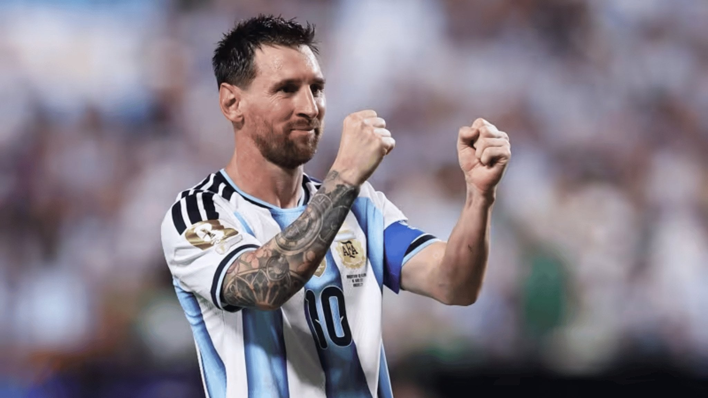

Lionel Andrés Messi Cuccittini[note 1] (Spanish pronunciation: [ljoˈnel anˈdɾez ˈmesi] (About this soundlisten);[A] born 24 June 1987)
is an Argentine professional footballer who plays as a forward and captains both Spanish club Barcelona and the Argentina national team.
Often considered the best player in the world and regarded by many as the greatest player of all time,[6][7][8][9][10] Messi has won a record-tying
five Ballon d'Or awards,[note 2] four of which he won consecutively, and a record five European Golden Shoes. He has spent his entire professional career
with Barcelona, where he has won a club-record 32 trophies, including nine La Liga titles, four UEFA Champions League titles and six Copas del Rey.
Both a prolific goalscorer and a creative playmaker, Messi holds the records for most goals in La Liga and in Europe's top-five leagues (416),
a La Liga season and club league season in Europe (50), a club football season in Europe (73), most official goals in a calendar year (91), El Clásico (26),
most hat-tricks in the UEFA Champions League (8), as well as those for most assists in La Liga (166)
and the Copa América (11). He has scored over 685 senior career goals for club and country.
Early life
Lionel Andrés Messi was born on 24 June 1987 in Rosario, the third of four children of Jorge Messi, a steel factory manager,
and his wife Celia Cuccittini, who worked in a magnet manufacturing workshop. On his father's side, he is of Italian and Spanish descent,
the great-grandson of immigrants from the northcentral Adriatic Marche region of Italy and Catalonia, and on his mother's side,
he has primarily Italian ancestry.[4] Growing up in a tight-knit, football-loving family, "Leo" developed a passion for the sport from an early age,
playing constantly with his older brothers, Rodrigo and Matías, and his cousins, Maximiliano and Emanuel Biancucchi, both of whom became professional
footballers.[13] At the age of four he joined local club Grandoli, where he was coached by his father, though his earliest influence as a player came
from his maternal grandmother, Celia, who accompanied him to training and matches.[14] He was greatly affected by her death, shortly before his
eleventh birthday; since then, as a devout Catholic,
he has celebrated his goals by looking up and pointing to the sky in tribute of his grandmother.
His Clubs and Career
Here is the list of clubs in which he has played
- Barcelona
- Argentina
It is intresting to see that messi has always played for barcelona and never played for another club.
There is an intresting story behind it.
Career
Barcelona
2003–05: Rise to the first team
"It seemed as if he had been playing with us all his life."
—Barcelona's then assistant coach Henk Ten Cate on Messi's first-team debut.[32]
During the 2003–04 season, his fourth with Barcelona, Messi rapidly progressed through the club's ranks,
debuting for a record five teams in a single campaign. After being named player of the tournament in four international pre-season
competitions with the Juveniles B, he played only one official match with the team before being promoted to the Juveniles A,
where he scored 18 goals in 11 league games.[33][34] Messi was then one of several youth players called up to strengthen a depleted first team
during the international break. French winger Ludovic Giuly explained how a teenage Leo caught the eye in a training session with Frank Rijkaard's first team:
"He destroyed us all... They were kicking him all over the place to avoid being ridiculed by this kid, he just got up and kept on playing.
He would dribble past four players and score a goal. Even the team's starting centre-backs were nervous. He was an alien."[35]
At 16 years, four months, and 23 days old, Messi made his first team debut when he came on
in the 75th minute during a friendly against José Mourinho's Porto on 16 November 2003.
His performance, creating two chances and a shot on goal, impressed the technical staff, and he subsequently began training daily with
the club's reserve side, Barcelona B, as well as weekly with the first team.[37] After his first training session with the senior squad,
Barça's new star player, Ronaldinho, told his teammates that he believed the 16-year-old would become an even better player than himself.[38]
Ronaldinho soon befriended Messi, whom he called "little brother", which greatly eased his transition into the first team.